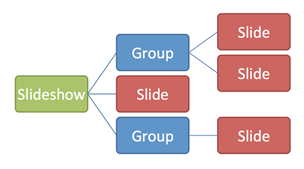
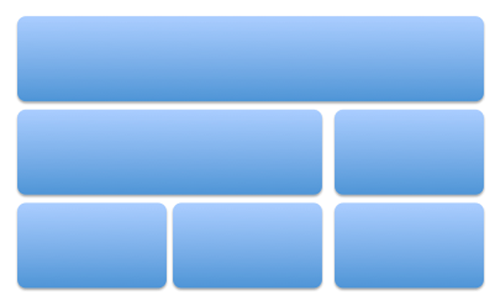

SlideMaker |
| A simple slides generator for Reveal |
| By Dany Jupille, Jason Racine & Johan Chavaillaz |
| Use the right key to proceed. |
What is Reveal ? |
| A framework for incredible HTML5 slideshows including |
|
| This presentation actually uses Reveal. |
What is SlideMaker ? |
| A generator to use with Reveal |
|
| ... and many other things ! |
Structure of a slideshow |
| A slideshow is made of groups and slides. |
|  |
| Use the down key to proceed. |
| You just went down through 2 slides inside of the same group. |
| When inside a group, the down key is used to go through its slides. |
| The right key can be used to go to the next top-level element. |
| Continue with the right key |
Displaying simple text |
| The Text tag is used to display a simple paragraph. |
| Use the down key to go through all the slides of this group. |
Displaying rich text |
| The RichText and Element tags are used to display formatted text. |
| This method enables you to format your text using all common CSS properties |
|
Displaying a slide title |
| The Title tag is used to display a title like above. |
| This title only appears on its slide. |
| To define a title like Texts in the corner of this slide, put him in argument of the Group tag. |
Making lists | ||
| The List tag is used to display a list of items. | ||
| A list can be ordered or not. | ||
| ||
| Use the right key to continue to the next group | ||
Arranging elements |
| The boxes system allows you to arrange elements horizontally and vertically. |
|  |
| Use the down key to go through all the slides of this group. |
Horizontal boxes |
| The HorizontalBox tag is used to display elements horizontally. |
| By default, elements are stacked vertically. |
| Horizontal box allows you to stack some elements side by side. |
Vertical boxes |
| The VerticalBox tag is used to display elements vertically. |
| By default, elements are already stacked vertically. |
| This tag could be useful for its setting, which permit to define a margin between stacked elements. |
| Use the right key to continue to the next group |
Making loops |
| The For tag is used to repeat some elements. |
| Slides, texts and other elements can be generated in batches. |
| The list below is generated by a 3-times looping generation. |
| This line is the # 1 generated by the loop This line is the # 2 generated by the loop This line is the # 3 generated by the loop |
| Use the down key to go through all the slides of this group. |
Using external data sources | ||||||||||||
| The Table tag is used to generate a data table from a CSV file. | ||||||||||||
| The example below comes from a CSV file providen with this slideshow. | ||||||||||||
| ||||||||||||
| Use the right key to continue to the next group | ||||||||||||
Finally |
| We recommand you to consult the complete documentation of SlideMaker. |
| You can also test the providen examples, and read the source code for better understanding. |
Thank you ! |